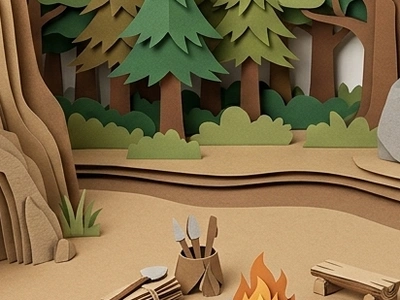
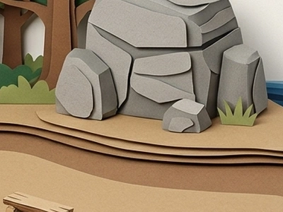
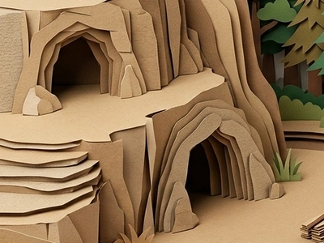

第 1 回合時間軸
第 1 年
剩餘 60 秒
石棒計年・已走過 0 年
族人會依照指令持續工作；時間軸走完才進入下回合
⛰️ 海邊岩洞 (八仙洞)
🌲 森林 ｜ 🪨 大石頭灘
🌊 太平洋沿岸
提示訊息
⛺
點選營地實地勘查
請選擇今晚的居住營地：

🌳 森林
💧 河邊

🪨 大石頭旁

⛰️ 海邊岩洞
第 1 回合｜活下來
點擊角色查看
📋 工作報告
點擊角色查看工作成果、聽取想法，或直接變更工作
請先選擇一位族人
選一位帶領大家的人
點選合適的族人，帶領大家建立營地
老爺爺
能力傾向：經驗、石器
「我認得哪些石頭能做工具。」
⛰️ 海邊岩洞
帶頭者 徵詢大家：
「大家今晚住這裡嗎？」
老爺爺
😠 生氣受凍
❤️
新的家庭正在形成
一對年輕男女想一起守護這個家
青年男子 ＋ 青年女子
前三季內會啟動婚姻機制；穩定度足夠時自然形成，若資源不足也會為了人口延續安排可配對族人。確認結為伴侶後，三回合會隨機迎來男孩或女孩。
💬
族人來報告了！
族人
目前指令：工作中
「我好像發現了什麼……」
按下確定後關閉對談，底層工作會持續執行。
長老言傳身教·技術傳承
小石 向
老爺爺 請益
長老叮嚀：
「跟我來，我教你找石頭。」
傳承技能：挑選石材
步驟進度
1
2
3